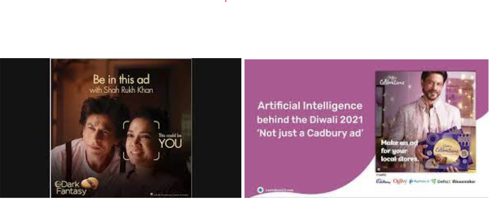
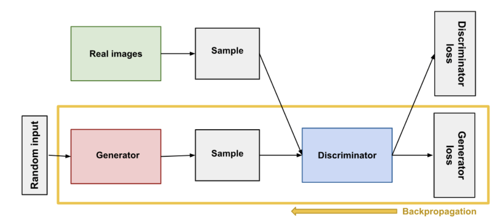
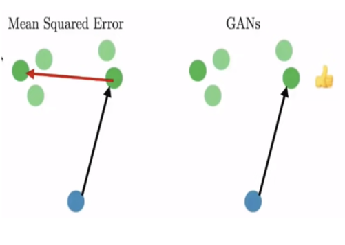
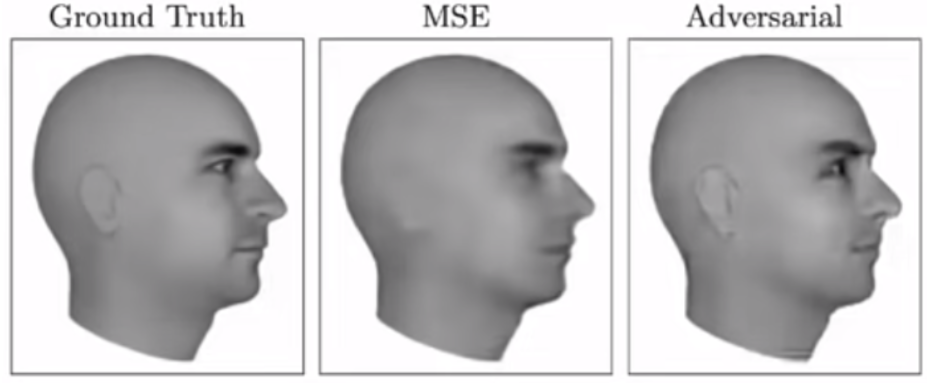
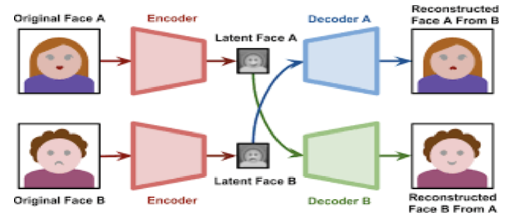
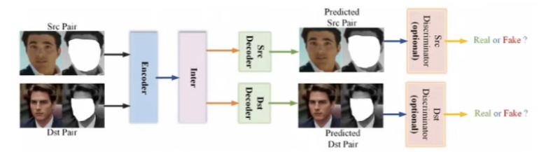

Remember the Sunfeast ad? The one where your face could be mapped onto someone else’s and boom you get featured in an advertisement with Shah Rukh Khan. Cadbury had a similar marketing campaign with its “NotACadburyAd” again giving innumerable SRK fans to flaunt their personal advertisements with him.

Well you may or may not know this, but the technology that makes this possible is deep fake.
Yes, the same deep fake that has previously been notorious for ruining lives and giving life to salacious incentives.
Deep fakes, derived from the fusion of "Deep Learning" and "Fakes," refer to images, videos, or audio that undergo manipulation via deep learning algorithms. These algorithms facilitate the mapping of one face onto another target, producing a convincing output set in the same context as the target. Additionally, they can extract facial expressions from a source input to generate a manipulated outcome.
The Sunfeast as well as Cadbury ad included a mapping of your face onto someone else’s face already in the ad. Whereas the Cadbury ad included Shah Rukh Khan branding your business, which basically included altering the portions of audio, modelled on his voice, and lip-syncing his video for the audio. Zomato’s “Mann Kiya, Zomato Kiya” ad which included Hrithik Roshan asking for food from a popular restaurant based on the city you were in, using dialogue replacement. Even Business Club used deep fakes in its introductory seminar in August 2023 where we showed a conversation between Barack Obama , Donald Trump and Joe Biden promoting Business Club.
Deep fake isn’t just limited to faces or people, researchers from MIT deepfaked a whole city.
Deepfaked Boston’s Back Bay neighbourhood by an AI model trained on images of Aleppo, by MIT Researchers
Even the sharpest knife can butter up trouble in the wrong hands, and similarly, deep fakes can be wielded as potent tools of propaganda and misinformation. Instances like the fabricated video of Volodymyr Zelensky surrendering demonstrate how deep fakes can manipulate global geopolitics. With the rapid dissemination of information on social media, these tools can swiftly alter public perception, manipulate elections, and even incite violence.
The rise of deep fakes, convincing digital manipulations of public figures, poses serious threats to trust in digital content and personal security. MIT conducted experiments to gauge the level of deception caused by deep fakes, highlighting their potential for misuse in blackmail and scams like the Elon Musk crypto scam.
These manipulations, predominantly prevalent in the pornographic industry, blur the line between fact and fiction, leading to widespread skepticism and undermining the credibility of recorded media. Lawmakers worldwide grapple with the challenge of regulating deep fake technology, with the US government involving agencies like the FBI and DARPA to address the issue.
Detection methods, such as combining recurrent neural networks (RNNs) and convolutional neural networks (CNNs), offer promise in identifying deep fakes by discerning subtle inconsistencies. However, the rapid advancement of deep fake technology presents a continuous challenge, as newer models become increasingly sophisticated, surpassing detection capabilities. Despite current detection models boasting a 94.4% accuracy rate, the potential for carefully crafted deep fakes to evade detection remains a significant concern.
But how do deep fakes actually work, from absolute basics all the way up?
Deep fake uses a combination of Generative Adversarial Networks (GANs) and Auto-encoders.
Generative Adversarial Networks (GANs) are a groundbreaking and influential class of neural networks designed for generative modelling, a type of unsupervised learning. Introduced by Ian Goodfellow and his colleagues in 2014, GANs have revolutionised the field of artificial intelligence, particularly in tasks involving generating highly realistic images, videos, music, and even text.
Basic Concept
The core idea behind GANs is relatively straightforward but profound. A GAN consists of two neural networks, the Generator and the Discriminator, which are trained simultaneously through a competitive process:
Generator (G): This network learns to generate data (e.g., images) that resemble the real data. Its goal is to produce outputs indistinguishable from genuine data to the extent that the Discriminator cannot reliably tell the difference.
Discriminator (D): In contrast, the Discriminator learns to distinguish between the real data (from the training dataset) and the fake data produced by the Generator. Essentially, it acts as a critic that gets better and better at identifying what's real and what's not.
Training Process
Training a GAN involves a delicate balance where the Generator and the Discriminator improve in tandem through an adversarial process, often described as a "minimax" game. Here's a simplified overview of the steps involved:
Training the Discriminator: Initially, the Discriminator is trained with a batch of data containing both real and fake images (generated by the Generator). The goal is to maximise its ability to correctly label the images as real or fake.
Training the Generator: Next, the Generator is trained to fool the Discriminator. The Generator's output is fed to the Discriminator, and the Generator is updated based on how well the Discriminator was able to distinguish the fake data from the real data. The objective is to minimise the Discriminator's accuracy, thereby improving the Generator's ability to produce realistic data.
Iterative Improvement: This process is repeated in numerous iterations, with both networks improving over time. The Generator learns to produce increasingly realistic data, while the Discriminator becomes better at distinguishing real from fake. As studied earlier, the discriminator could be a standard CNN model that is trained to distinguish between real images and fake images as generated by the generator.

Two types of losses are calculated, the generator loss and the discriminator loss, first a discriminator loss is calculated, and the discriminator is trained, and then the generator is trained.
As stated, we are in a minimax game and trying to minimise the losses.
We can write the loss as a function:
Here V is the loss for the model, E stands for expectation, first part is the discriminator loss independent of the generator x~Pdata(x) shows that the input is sampled from the input space distribution and its log loss is calculated whereas the second part which represents the discriminator loss dependant of the generator z~Pnoise(z) is the noise sampled from the distribution of noise (generally gaussian distribution), and its log loss is calculated, considering the fact that (y = 0) for the generator for this case.
For the discriminator, we want to maximise this since we want it to be the most accurate. (i.e value to be near 0). Whereas for the generator we want it to generate realistic output and thus we want to maximise the error of the discriminator. (i.e. value to be highly negative).
Now we have two options, one is to maximise the discriminator loss D and then minimise the generator loss G and the other to minimise G and then maximise D:
Minimising G might inadvertently lead to inverse training of the discriminator, potentially compromising generation quality. Conversely, maximising D initially helps the generator understand the distinction between real and fake images, improving generation capabilities over time. This iterative process, alternating between training the discriminator and the generator, ideally results in the generator producing indistinguishable images.
Note: Taking multiple steps towards convergence for the discriminator model, as in mini-batch gradient descent or running a few epochs at a time is a better option, considering the fact that the discriminator would actually have a sense of what is real and what is fake after a few steps as compared to one and generator can actually improve as compared to worsening the discriminator* and so that we do not again run into the non-convergence issue mentioned above.
*An enhanced discriminator signifies the model's convergence, implying that further improvements to the generator could push the model closer to convergence. Conversely, an average discriminator suggests the model isn't yet converging. Training the generator at this stage might degrade the discriminator's performance, as there are numerous ways for it to worsen, making it a more probable outcome.
Generative Process:
Random noise is sampled from a pre-set distribution and a generator network, could be convolutional layers, dense layers, auto-encoders, or even U-Nets are used.
Generally, the random noise given as input is smaller then the output size and is present just to induce variation in the generations, and could come from the motivation that while drawing random thoughts, events influence it even for humans.
A model trained with this architecture will only produce one type of output, but if we want it to be trained on multiple types, then we can use an image/text embedding as input for the generator as well.
The reason why GANs are inherently better than U-Nets, CNNs, and other generative models is their ability to not train on direct losses but on understanding the implicit representations of both the generative and discriminative part and use them as adversarial of one another to generate images that realistic instead of images that match the output. As stated before, provided enough computing power it could ideally lead to infinite generation capabilities.
For normal generative models, the process of learning on custom-defined loss functions and matching on input images from a given dataset often leads to low sharpness of the image and very averaged-out features, of the ones present in the training set. This problem is not present in GANs, since they allow multiple answers, as compared to other networks.

An example of the low sharpness output for MSE models for the next video frame prediction, because of averaging out predictions from training cases. GANs can predict more accurately because their training is not based on given data loss, but on what could be a suitable prediction for the discriminator.

Generating Deep Fakes:

But How are deepfakes generated?
Two different encoder networks are trained, one to generate faces of A and another for B. Then the encoded versions of image A and B are switched between the networks, this results in encoder 1 generating image of B with face of A and vice versa for encoder 2.
This encoder-decoder network could be a U-Net and the output can further be paired with a discriminator network, thus training the whole network as a GAN, further improving performance.
This type of deepfake architecture has a problem, which is that networks with the same architectures might have different ways/methods of final representation, i.e. different ways of encoding, hence it is better to use a unified encoder network and separate decoder networks.
Further predictive masks can be used to highlight regions which need more attention to detail and then the process of reconstruction and can be used to guide the discriminator network on where to zero in while detecting flaws. For the reconstruction part the masked part can be fed into a network trained to just reconstruct the facial features and expression, instead of the whole image.
